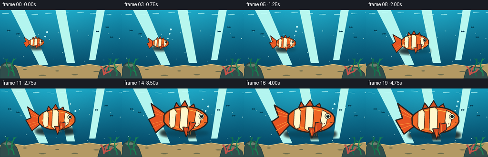
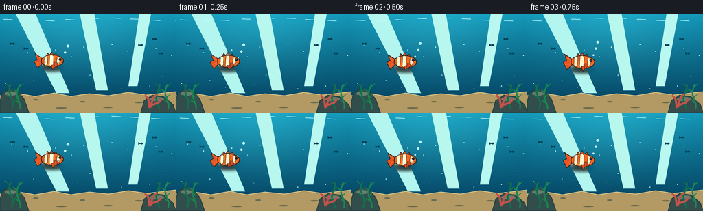

CODING AGENTS AS PIXEL WORLD MODELS
traex/GPT-5.6-Sol · instance_preservation_0050
点击播放 · 原生 RGB 像素
逐轮保存的候选
回放视频、检查图与代码变化。
每份候选均可单独播放。实际图片检查记录在下方工具轨迹中。
候选 01播放与检查图
点击播放 · 原生 RGB 像素

展开代码变化
--- 上一保存版本
+++ 本次保存版本
@@ -0,0 +1,229 @@
+from pathlib import Path
+import math
+import numpy as np
+from PIL import Image, ImageDraw, ImageFilter
+import artifact_io
+
+# Deterministic, hand-drawn animation generated entirely from geometry.
+W, H, N = 256, 144, 20
+S = 4
+rng = np.random.default_rng(5031)
+
+
+def smoothstep(x):
+ x = max(0.0, min(1.0, x))
+ return x*x*(3.0-2.0*x)
+
+
+def sc(v):
+ return int(round(v*S))
+
+
+def ellipse(draw, box, fill, outline=None, width=1):
+ draw.ellipse(tuple(sc(v) for v in box), fill=fill, outline=outline, width=sc(width) if outline else 1)
+
+
+def line(draw, points, fill, width=1, joint='curve'):
+ draw.line([(sc(x), sc(y)) for x,y in points], fill=fill, width=max(1,sc(width)), joint=joint)
+
+
+def poly(draw, points, fill, outline=None, width=1):
+ pts=[(sc(x),sc(y)) for x,y in points]
+ draw.polygon(pts, fill=fill)
+ if outline:
+ draw.line(pts+[pts[0]], fill=outline, width=max(1,sc(width)), joint='curve')
+
+
+def make_background():
+ # Deep-to-shallow ocean gradient with a soft central glow.
+ yy, xx = np.mgrid[0:H*S, 0:W*S]
+ yn = yy/(H*S-1)
+ xn = xx/(W*S-1)
+ top=np.array([19,151,184.],float); bottom=np.array([3,61,91.],float)
+ a=(yn**0.80)[...,None]
+ arr=top*(1-a)+bottom*a
+ glow=np.exp(-((xn-.47)/.42)**2-((yn-.17)/.43)**2)[...,None]
+ arr += glow*np.array([13,24,21.])
+ # slight fine texture prevents a synthetic flat field
+ noise=rng.normal(0,1.2,(H*S,W*S,1))
+ arr=np.clip(arr+noise,0,255).astype(np.uint8)
+ return Image.fromarray(arr,'RGB').convert('RGBA')
+
+
+def draw_environment(base, frame):
+ d=ImageDraw.Draw(base,'RGBA')
+ # Light rays from the surface.
+ poly(d, [(22,-2),(51,-2),(101,115),(82,115)], (179,245,239,15))
+ poly(d, [(116,-2),(137,-2),(157,111),(140,111)], (183,247,238,12))
+ poly(d, [(203,-2),(220,-2),(200,105),(187,105)], (185,248,240,12))
+ # Surface shimmer, with very restrained movement.
+ for i in range(9):
+ x=5+i*31 + 3*math.sin(frame*.34+i*1.7)
+ y=7+2*math.sin(frame*.43+i)
+ line(d,[(x,y),(x+13,y+.6)],(191,253,248,75),1)
+ # distant schools of tiny fish silhouettes
+ for i,(x,y) in enumerate([(19,43),(37,50),(224,36),(205,45),(236,57)]):
+ dx=1.8*math.sin(frame*.13+i)
+ poly(d,[(x+dx,y),(x-4+dx,y-1.7),(x-4+dx,y+1.7)],(3,66,88,105))
+ ellipse(d,(x+dx-1.2,y-1.25,x+dx+2.8,y+1.25),(3,66,88,105))
+ # seabed, stable in frame so the fish's changing size is unambiguous.
+ sand=[(0,119),(28,116),(51,120),(79,115),(103,120),(130,116),(158,119),(187,114),(213,118),(256,113),(256,144),(0,144)]
+ poly(d,sand,(179,153,99,255))
+ line(d,sand[:10],(225,201,137,190),1.2)
+ # mottled sand marks
+ for x,y,rx in [(19,132,7),(52,125,4),(89,137,8),(120,128,4),(157,136,7),(202,129,6),(236,137,5)]:
+ ellipse(d,(x-rx,y-1,x+rx,y+1),(105,106,76,55))
+ # rocks
+ poly(d,[(0,128),(3,115),(13,109),(25,112),(35,124),(42,144),(0,144)],(49,78,76,255), (30,60,63,255),1)
+ poly(d,[(205,144),(210,126),(222,118),(238,120),(252,132),(256,144)],(52,77,75,255),(30,59,62,255),1)
+ ellipse(d,(7,113,24,119),(102,126,109,110))
+ ellipse(d,(218,121,239,127),(105,124,102,100))
+ # sea plants on both sides
+ for root, phase, color in [(16,.2,(18,112,77,255)),(27,1.2,(24,132,80,255)),(230,2.1,(17,111,79,255)),(243,.7,(28,132,86,255))]:
+ pts=[]
+ for k in range(15):
+ y=139-k*2.65
+ x=root+2.6*math.sin(k*.42+phase+frame*.055)
+ pts.append((x,y))
+ line(d,pts,color,2.2)
+ for k in [4,7,10,13]:
+ x,y=pts[k]
+ side=-1 if (k+int(root))%2 else 1
+ poly(d,[(x,y),(x+side*7,y-4),(x+side*1,y+2)],color)
+ # coral at lower right
+ coral=(194,83,74,255)
+ for pts in [[(218,137),(216,124),(211,118)],[(219,136),(223,122),(228,117)],[(220,133),(231,129),(235,124)]]:
+ line(d,pts,coral,3)
+ # fixed fine water particles, a small cyclic drift
+ for i in range(24):
+ x=(int((i*73+31)%251)+frame*.18*(1+i%3))%256
+ y=15+((i*47)%96)
+ r=.35+(i%4)*.12
+ ellipse(d,(x-r,y-r,x+r,y+r),(196,246,234,80))
+
+
+def fish_point(u,v,cx,cy,size,ang):
+ # Coordinates in the fish's own reference frame, transformed as one preserved instance.
+ ca,sa=math.cos(ang),math.sin(ang)
+ return (cx+size*(u*ca-v*sa), cy+size*(u*sa+v*ca))
+
+
+def fish_poly(draw, coords, cx,cy,size,ang, fill, outline=None,width=1):
+ poly(draw,[fish_point(u,v,cx,cy,size,ang) for u,v in coords],fill,outline,width*size)
+
+
+def fish_line(draw, coords, cx,cy,size,ang, fill,width=1):
+ line(draw,[fish_point(u,v,cx,cy,size,ang) for u,v in coords],fill,width*size)
+
+
+def body_profile(u):
+ return 23.5*max(0,(1-(u/43.0)**2))**0.55
+
+
+def draw_fish(im, frame, cx, cy, size, ang):
+ d=ImageDraw.Draw(im,'RGBA')
+ tail_phase=math.sin(frame*.9)
+ outline=(41,34,31,255)
+ # Soft contact-like shadow is intentionally independent of growth effects.
+ shadow=Image.new('RGBA',im.size,(0,0,0,0)); sd=ImageDraw.Draw(shadow,'RGBA')
+ ellipse(sd,(cx-47*size,cy+20*size,cx+44*size,cy+33*size),(0,20,28,65))
+ shadow=shadow.filter(ImageFilter.GaussianBlur(sc(3.0)))
+ im.alpha_composite(shadow)
+ d=ImageDraw.Draw(im,'RGBA')
+ # Fins behind the body.
+ dorsal=[(-25,-14),(-18,-31),(-11,-22),(-2,-35),(5,-22),(15,-29),(20,-15)]
+ fish_poly(d,dorsal,cx,cy,size,ang,(211,79,33,255),outline,2.0)
+ # tail oscillates but keeps the same recognizable fork shape
+ tv=tail_phase*3.5
+ tail=[(-37,-8),(-66,-28+tv),(-58,-4+tv*.25),(-70,2+tv),(-56,27+tv),(-36,9)]
+ fish_poly(d,tail,cx,cy,size,ang,(231,84,34,255),outline,2.3)
+ # tail rays
+ for vv in [-18,-10,10,18]:
+ fish_line(d,[(-39,vv*.35),(-62,vv+tv)],cx,cy,size,ang,(255,157,60,125),.75)
+ # Body silhouette sampled as a smooth almond-like contour.
+ us=np.linspace(-41,42,44)
+ body=[(float(u),-body_profile(float(u))) for u in us]
+ body += [(float(u),body_profile(float(u))) for u in us[::-1]]
+ fish_poly(d,body,cx,cy,size,ang,(239,102,37,255),outline,2.4)
+ # warm belly and upper highlight contained well within silhouette
+ belly=[(-31,9),(-17,17),(7,19),(28,11),(38,3),(20,13),(-8,16)]
+ fish_poly(d,belly,cx,cy,size,ang,(250,135,47,130))
+ fish_line(d,[(-27,-15),(-5,-20),(19,-15),(33,-8)],cx,cy,size,ang,(255,181,71,160),1.4)
+ # Three persistent cream bands give very strong instance identity.
+ bands=[
+ [(-30,-16),(-22,-20),(-18,-14),(-20,15),(-27,18),(-31,10)],
+ [(-9,-22),(0,-23),(5,-18),(3,19),(-4,22),(-11,17)],
+ [(20,-17),(28,-13),(31,-8),(27,10),(20,15),(16,10)]
+ ]
+ for b in bands:
+ fish_poly(d,b,cx,cy,size,ang,(255,235,174,255),(72,43,29,220),1.05)
+ # narrow luminous center
+ core=[((u*.82 + sum(p[0] for p in b)/len(b)*.18),v*.87) for u,v in b]
+ fish_poly(d,core,cx,cy,size,ang,(255,247,205,135))
+ # lower fin
+ fin=[(-5,15),(2,34),(9,19),(18,16)]
+ fish_poly(d,fin,cx,cy,size,ang,(213,73,31,245),outline,1.6)
+ for u in [1,5,9]:
+ fish_line(d,[(u,19),(u+1,29)],cx,cy,size,ang,(249,144,54,170),.55)
+ # near pectoral fin, gently paddling
+ paddle=math.sin(frame*.75+1)*4
+ fin2=[(8,5),(5+paddle*.2,26),(18+paddle,17),(20,7)]
+ fish_poly(d,fin2,cx,cy,size,ang,(214,72,31,220),outline,1.3)
+ fish_line(d,[(11,9),(10+paddle*.4,21)],cx,cy,size,ang,(255,153,57,180),.7)
+ # eye and face details
+ ex,ey=fish_point(30,-6,cx,cy,size,ang)
+ er=5.2*size
+ ellipse(d,(ex-er,ey-er,ex+er,ey+er),(245,236,198,255),outline,max(1,.9*size))
+ pr=2.75*size
+ ellipse(d,(ex-pr+.3*size,ey-pr,ex+pr+.3*size,ey+pr),(12,28,30,255))
+ ellipse(d,(ex-.4*size,ey-1.8*size,ex+.9*size,ey-.5*size),(126,226,230,255))
+ # gill, friendly mouth, and a tiny permanent cheek freckle
+ fish_line(d,[(19,-10),(17,1),(20,9)],cx,cy,size,ang,(91,44,28,210),.9)
+ fish_line(d,[(35,5),(40,6),(42,3)],cx,cy,size,ang,(70,40,30,255),1.0)
+ fx,fy=fish_point(24,7,cx,cy,size,ang)
+ ellipse(d,(fx-.8*size,fy-.8*size,fx+.8*size,fy+.8*size),(112,48,29,230))
+
+
+def render_frame(i):
+ t=i/(N-1)
+ im=make_background()
+ draw_environment(im,i)
+ # Growth dominates the shot: 0.38x to 1.18x, eased naturally over the middle.
+ growth=smoothstep((t-.07)/.82)
+ size=.38+.80*growth
+ travel=smoothstep(t)
+ cx=76+69*travel
+ cy=68+2.0*math.sin(t*math.pi*2.1)-2*growth
+ ang=.025*math.sin(i*.55)
+ # a few bubbles rise from the same fish and scale minimally, aiding temporal continuity
+ d=ImageDraw.Draw(im,'RGBA')
+ for j in range(3):
+ age=(t*1.35+j*.28)%1
+ bx=cx+(34*size)+j*4+math.sin(i*.4+j)*2
+ by=cy-7*size-age*34
+ r=1.2+j*.35
+ ellipse(d,(bx-r,by-r,bx+r,by+r),(178,244,242,38),(211,255,250,150),.65)
+ draw_fish(im,i,cx,cy,size,ang)
+ # Sparse growth glints only during active transformation; no text or symbols.
+ strength=math.sin(math.pi*smoothstep((t-.08)/.82))
+ if strength>.12:
+ d=ImageDraw.Draw(im,'RGBA')
+ for j in range(7):
+ a=j*2.399+i*.11
+ rr=(31+8*math.sin(i*.31+j))*size
+ x=cx+math.cos(a)*rr
+ y=cy+math.sin(a)*rr*.62
+ r=.7+strength*.7
+ line(d,[(x-r*2,y),(x+r*2,y)],(248,241,162,int(100*strength)),.65)
+ line(d,[(x,y-r*2),(x,y+r*2)],(248,241,162,int(100*strength)),.65)
+ # downsample for clean antialiased vector-like edges
+ return np.asarray(im.convert('RGB').resize((W,H),Image.Resampling.LANCZOS),dtype=np.uint8)
+
+
+def main():
+ frames=np.stack([render_frame(i) for i in range(N)],axis=0)
+ artifact_io.save(frames,Path(__file__).resolve().parent)
+ print('saved',frames.shape,frames.dtype,'range',frames.min(),frames.max())
+
+if __name__=='__main__':
+ main()
候选 02播放与检查图
点击播放 · 原生 RGB 像素


展开代码变化
--- 上一保存版本
+++ 本次保存版本
@@ -8,6 +8,7 @@
W, H, N = 256, 144, 20
S = 4
rng = np.random.default_rng(5031)
+BG_NOISE = rng.normal(0, 1.2, (H*S, W*S, 1))
def smoothstep(x):
@@ -45,9 +46,9 @@
glow=np.exp(-((xn-.47)/.42)**2-((yn-.17)/.43)**2)[...,None]
arr += glow*np.array([13,24,21.])
# slight fine texture prevents a synthetic flat field
- noise=rng.normal(0,1.2,(H*S,W*S,1))
- arr=np.clip(arr+noise,0,255).astype(np.uint8)
- return Image.fromarray(arr,'RGB').convert('RGBA')
+ # The texture is fixed across the shot (never animated noise/flicker).
+ arr=np.clip(arr+BG_NOISE,0,255).astype(np.uint8)
+ return Image.fromarray(arr).convert('RGBA')
def draw_environment(base, frame):
候选 03播放与检查图
可观测工具轨迹
实际执行的命令与返回图片。
命令 1exit 0
/bin/bash -lc "cat prompt.txt && printf '\\n---RULES---\\n' && cat GENERATION_RULES.md && printf '\\n---SPEC---\\n' && cat task_spec.json"
命令 2exit 1
/bin/bash -lc "find . -maxdepth 2 -type f -printf '%p %s bytes\\n' | sort && printf '\\nTOOLS\\n' && command -v ffmpeg && command -v python3 && python3 - <<'PY'
try:
import cv2; print('cv2',cv2.__version__)
except Exception as e: print('no cv2',e)
try:
from PIL import Image; print('PIL ok')
except Exception as e: print('no PIL',e)
PY"命令 3exit 0
/bin/bash -lc 'cat artifact_io.py'
命令 4exit 0
/bin/bash -lc "python3 - <<'PY' mods=['numpy','PIL','cv2','imageio','imageio_ffmpeg'] for m in mods: try: x=__import__(m); print(m, getattr(x,'__version__','ok')) except Exception as e: print(m, 'NO', repr(e)) PY for x in ffmpeg convert magick; do command -v \""'$x" || true; done'
命令 5exit 0
/bin/bash -lc "cat > generate.py <<'PY'
from pathlib import Path
import math
import numpy as np
from PIL import Image, ImageDraw, ImageFilter
import artifact_io
# Deterministic, hand-drawn animation generated entirely from geometry.
W, H, N = 256, 144, 20
S = 4
rng = np.random.default_rng(5031)
def smoothstep(x):
x = max(0.0, min(1.0, x))
return x*x*(3.0-2.0*x)
def sc(v):
return int(round(v*S))
def ellipse(draw, box, fill, outline=None, width=1):
draw.ellipse(tuple(sc(v) for v in box), fill=fill, outline=outline, width=sc(width) if outline else 1)
def line(draw, points, fill, width=1, joint='curve'):
draw.line([(sc(x), sc(y)) for x,y in points], fill=fill, width=max(1,sc(width)), joint=joint)
def poly(draw, points, fill, outline=None, width=1):
pts=[(sc(x),sc(y)) for x,y in points]
draw.polygon(pts, fill=fill)
if outline:
draw.line(pts+[pts[0]], fill=outline, width=max(1,sc(width)), joint='curve')
def make_background():
# Deep-to-shallow ocean gradient with a soft central glow.
yy, xx = np.mgrid[0:H*S, 0:W*S]
yn = yy/(H*S-1)
xn = xx/(W*S-1)
top=np.array([19,151,184.],float); bottom=np.array([3,61,91.],float)
a=(yn**0.80)[...,None]
arr=top*(1-a)+bottom*a
glow=np.exp(-((xn-.47)/.42)**2-((yn-.17)/.43)**2)[...,None]
arr += glow*np.array([13,24,21.])
# slight fine texture prevents a synthetic flat field
noise=rng.normal(0,1.2,(H*S,W*S,1))
arr=np.clip(arr+noise,0,255).astype(np.uint8)
return Image.fromarray(arr,'RGB').convert('RGBA')
def draw_environment(base, frame):
d=ImageDraw.Draw(base,'RGBA')
# Light rays from the surface.
poly(d, [(22,-2),(51,-2),(101,115),(82,115)], (179,245,239,15))
poly(d, [(116,-2),(137,-2),(157,111),(140,111)], (183,247,238,12))
poly(d, [(203,-2),(220,-2),(200,105),(187,105)], (185,248,240,12))
# Surface shimmer, with very restrained movement.
for i in range(9):
x=5+i*31 + 3*math.sin(frame*.34+i*1.7)
y=7+2*math.sin(frame*.43+i)
line(d,[(x,y),(x+13,y+.6)],(191,253,248,75),1)
# distant schools of tiny fish silhouettes
for i,(x,y) in enumerate([(19,43),(37,50),(224,36),(205,45),(236,57)]):
dx=1.8*math.sin(frame*.13+i)
poly(d,[(x+dx,y),(x-4+dx,y-1.7),(x-4+dx,y+1.7)],(3,66,88,105))
ellipse(d,(x+dx-1.2,y-1.25,x+dx+2.8,y+1.25),(3,66,88,105))
# seabed, stable in frame so the fish's changing size is unambiguous.
sand=[(0,119),(28,116),(51,120),(79,115),(103,120),(130,116),(158,119),(187,114),(213,118),(256,113),(256,144),(0,144)]
poly(d,sand,(179,153,99,255))
line(d,sand[:10],(225,201,137,190),1.2)
# mottled sand marks
for x,y,rx in [(19,132,7),(52,125,4),(89,137,8),(120,128,4),(157,136,7),(202,129,6),(236,137,5)]:
ellipse(d,(x-rx,y-1,x+rx,y+1),(105,106,76,55))
# rocks
poly(d,[(0,128),(3,115),(13,109),(25,112),(35,124),(42,144),(0,144)],(49,78,76,255), (30,60,63,255),1)
poly(d,[(205,144),(210,126),(222,118),(238,120),(252,132),(256,144)],(52,77,75,255),(30,59,62,255),1)
ellipse(d,(7,113,24,119),(102,126,109,110))
ellipse(d,(218,121,239,127),(105,124,102,100))
# sea plants on both sides
for root, phase, color in [(16,.2,(18,112,77,255)),(27,1.2,(24,132,80,255)),(230,2.1,(17,111,79,255)),(243,.7,(28,132,86,255))]:
pts=[]
for k in range(15):
y=139-k*2.65
x=root+2.6*math.sin(k*.42+phase+frame*.055)
pts.append((x,y))
line(d,pts,color,2.2)
for k in [4,7,10,13]:
x,y=pts[k]
side=-1 if (k+int(root))%2 else 1
poly(d,[(x,y),(x+side*7,y-4),(x+side*1,y+2)],color)
# coral at lower right
coral=(194,83,74,255)
for pts in [[(218,137),(216,124),(211,118)],[(219,136),(223,122),(228,117)],[(220,133),(231,129),(235,124)]]:
line(d,pts,coral,3)
# fixed fine water particles, a small cyclic drift
for i in range(24):
x=(int((i*73+31)%251)+frame*.18*(1+i%3))%256
y=15+((i*47)%96)
r=.35+(i%4)*.12
ellipse(d,(x-r,y-r,x+r,y+r),(196,246,234,80))
def fish_point(u,v,cx,cy,size,ang):
# Coordinates in the fish's own reference frame, transformed as one preserved instance.
ca,sa=math.cos(ang),math.sin(ang)
return (cx+size*(u*ca-v*sa), cy+size*(u*sa+v*ca))
def fish_poly(draw, coords, cx,cy,size,ang, fill, outline=None,width=1):
poly(draw,[fish_point(u,v,cx,cy,size,ang) for u,v in coords],fill,outline,width*size)
def fish_line(draw, coords, cx,cy,size,ang, fill,width=1):
line(draw,[fish_point(u,v,cx,cy,size,ang) for u,v in coords],fill,width*size)
def body_profile(u):
return 23.5*max(0,(1-(u/43.0)**2))**0.55
def draw_fish(im, frame, cx, cy, size, ang):
d=ImageDraw.Draw(im,'RGBA')
tail_phase=math.sin(frame*.9)
outline=(41,34,31,255)
# Soft contact-like shadow is intentionally independent of growth effects.
shadow=Image.new('RGBA',im.size,(0,0,0,0)); sd=ImageDraw.Draw(shadow,'RGBA')
ellipse(sd,(cx-47*size,cy+20*size,cx+44*size,cy+33*size),(0,20,28,65))
shadow=shadow.filter(ImageFilter.GaussianBlur(sc(3.0)))
im.alpha_composite(shadow)
d=ImageDraw.Draw(im,'RGBA')
# Fins behind the body.
dorsal=[(-25,-14),(-18,-31),(-11,-22),(-2,-35),(5,-22),(15,-29),(20,-15)]
fish_poly(d,dorsal,cx,cy,size,ang,(211,79,33,255),outline,2.0)
# tail oscillates but keeps the same recognizable fork shape
tv=tail_phase*3.5
tail=[(-37,-8),(-66,-28+tv),(-58,-4+tv*.25),(-70,2+tv),(-56,27+tv),(-36,9)]
fish_poly(d,tail,cx,cy,size,ang,(231,84,34,255),outline,2.3)
# tail rays
for vv in [-18,-10,10,18]:
fish_line(d,[(-39,vv*.35),(-62,vv+tv)],cx,cy,size,ang,(255,157,60,125),.75)
# Body silhouette sampled as a smooth almond-like contour.
us=np.linspace(-41,42,44)
body=[(float(u),-body_profile(float(u))) for u in us]
body += [(float(u),body_profile(float(u))) for u in us[::-1]]
fish_poly(d,body,cx,cy,size,ang,(239,102,37,255),outline,2.4)
# warm belly and upper highlight contained well within silhouette
belly=[(-31,9),(-17,17),(7,19),(28,11),(38,3),(20,13),(-8,16)]
fish_poly(d,belly,cx,cy,size,ang,(250,135,47,130))
fish_line(d,[(-27,-15),(-5,-20),(19,-15),(33,-8)],cx,cy,size,ang,(255,181,71,160),1.4)
# Three persistent cream bands give very strong instance identity.
bands=[
[(-30,-16),(-22,-20),(-18,-14),(-20,15),(-27,18),(-31,10)],
[(-9,-22),(0,-23),(5,-18),(3,19),(-4,22),(-11,17)],
[(20,-17),(28,-13),(31,-8),(27,10),(20,15),(16,10)]
]
for b in bands:
fish_poly(d,b,cx,cy,size,ang,(255,235,174,255),(72,43,29,220),1.05)
# narrow luminous center
core=[((u*.82 + sum(p[0] for p in b)/len(b)*.18),v*.87) for u,v in b]
fish_poly(d,core,cx,cy,size,ang,(255,247,205,135))
# lower fin
fin=[(-5,15),(2,34),(9,19),(18,16)]
fish_poly(d,fin,cx,cy,size,ang,(213,73,31,245),outline,1.6)
for u in [1,5,9]:
fish_line(d,[(u,19),(u+1,29)],cx,cy,size,ang,(249,144,54,170),.55)
# near pectoral fin, gently paddling
paddle=math.sin(frame*.75+1)*4
fin2=[(8,5),(5+paddle*.2,26),(18+paddle,17),(20,7)]
fish_poly(d,fin2,cx,cy,size,ang,(214,72,31,220),outline,1.3)
fish_line(d,[(11,9),(10+paddle*.4,21)],cx,cy,size,ang,(255,153,57,180),.7)
# eye and face details
ex,ey=fish_point(30,-6,cx,cy,size,ang)
er=5.2*size
ellipse(d,(ex-er,ey-er,ex+er,ey+er),(245,236,198,255),outline,max(1,.9*size))
pr=2.75*size
ellipse(d,(ex-pr+.3*size,ey-pr,ex+pr+.3*size,ey+pr),(12,28,30,255))
ellipse(d,(ex-.4*size,ey-1.8*size,ex+.9*size,ey-.5*size),(126,226,230,255))
# gill, friendly mouth, and a tiny permanent cheek freckle
fish_line(d,[(19,-10),(17,1),(20,9)],cx,cy,size,ang,(91,44,28,210),.9)
fish_line(d,[(35,5),(40,6),(42,3)],cx,cy,size,ang,(70,40,30,255),1.0)
fx,fy=fish_point(24,7,cx,cy,size,ang)
ellipse(d,(fx-.8*size,fy-.8*size,fx+.8*size,fy+.8*size),(112,48,29,230))
def render_frame(i):
t=i/(N-1)
im=make_background()
draw_environment(im,i)
# Growth dominates the shot: 0.38x to 1.18x, eased naturally over the middle.
growth=smoothstep((t-.07)/.82)
size=.38+.80*growth
travel=smoothstep(t)
cx=76+69*travel
cy=68+2.0*math.sin(t*math.pi*2.1)-2*growth
ang=.025*math.sin(i*.55)
# a few bubbles rise from the same fish and scale minimally, aiding temporal continuity
d=ImageDraw.Draw(im,'RGBA')
for j in range(3):
age=(t*1.35+j*.28)%1
bx=cx+(34*size)+j*4+math.sin(i*.4+j)*2
by=cy-7*size-age*34
r=1.2+j*.35
ellipse(d,(bx-r,by-r,bx+r,by+r),(178,244,242,38),(211,255,250,150),.65)
draw_fish(im,i,cx,cy,size,ang)
# Sparse growth glints only during active transformation; no text or symbols.
strength=math.sin(math.pi*smoothstep((t-.08)/.82))
if strength>.12:
d=ImageDraw.Draw(im,'RGBA')
for j in range(7):
a=j*2.399+i*.11
rr=(31+8*math.sin(i*.31+j))*size
x=cx+math.cos(a)*rr
y=cy+math.sin(a)*rr*.62
r=.7+strength*.7
line(d,[(x-r*2,y),(x+r*2,y)],(248,241,162,int(100*strength)),.65)
line(d,[(x,y-r*2),(x,y+r*2)],(248,241,162,int(100*strength)),.65)
# downsample for clean antialiased vector-like edges
return np.asarray(im.convert('RGB').resize((W,H),Image.Resampling.LANCZOS),dtype=np.uint8)
def main():
frames=np.stack([render_frame(i) for i in range(N)],axis=0)
artifact_io.save(frames,Path(__file__).resolve().parent)
print('saved',frames.shape,frames.dtype,'range',frames.min(),frames.max())
if __name__=='__main__':
main()
PY
python3 generate.py
ls -lh pixels.npz inspection.png transition_check.png index.html frames/00.png frames/19.png"命令 6exit 0
/bin/bash -lc "python3 generate.py && python3 - <<'PY'
from pathlib import Path
import json, numpy as np
from PIL import Image
spec=json.loads(Path('task_spec.json').read_text())
a=np.load('pixels.npz')['pixels']
ims=list(Path('frames').glob('*.png'))
print('packed tensor',a.shape,a.dtype,'png frames',len(ims))
for k in [0,4,8,12,16,19]:
im=np.asarray(Image.open(f'frames/{k:02d}.png'))
print(k,im.shape,im.dtype,tuple(im.mean(axis=(0,1)).round(1)))
assert a.shape==(144,256,20) and len(ims)==20
assert all(Image.open(p).mode=='RGB' and Image.open(p).size==(256,144) for p in ims)
print('validation OK')
PY"保存候选 3 份；完成命令 6 次；可验证图片返回 0 张。原始 API 响应与完整日志保留在本地。